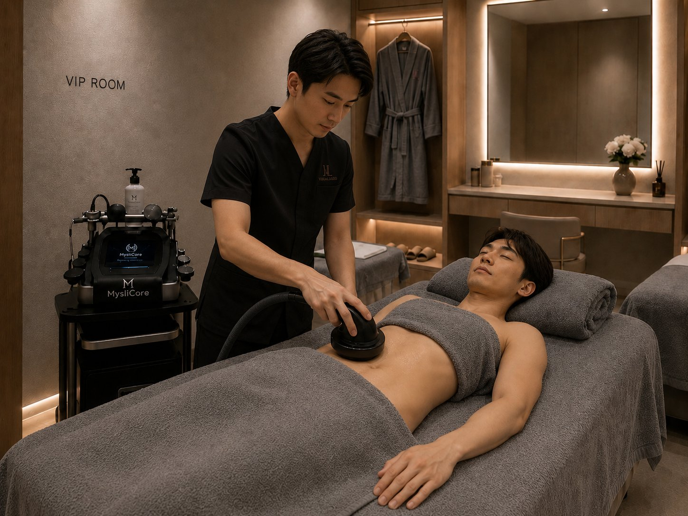
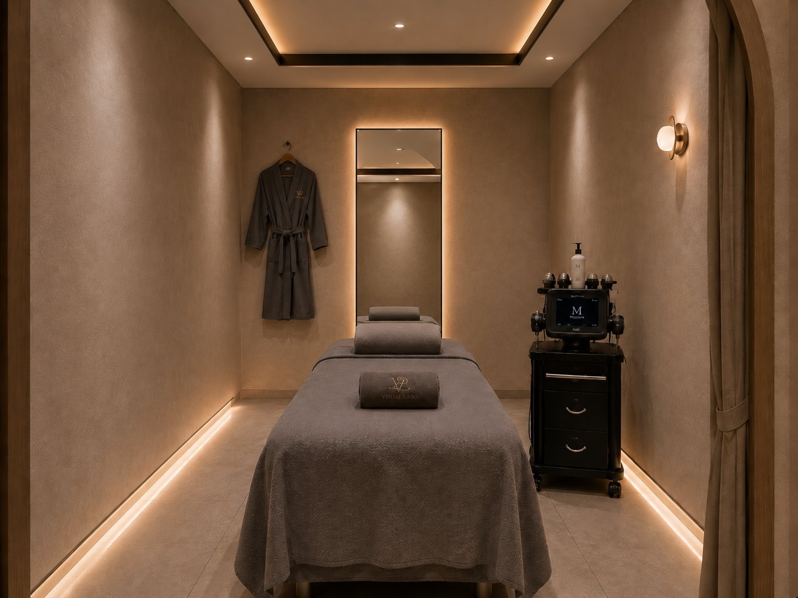
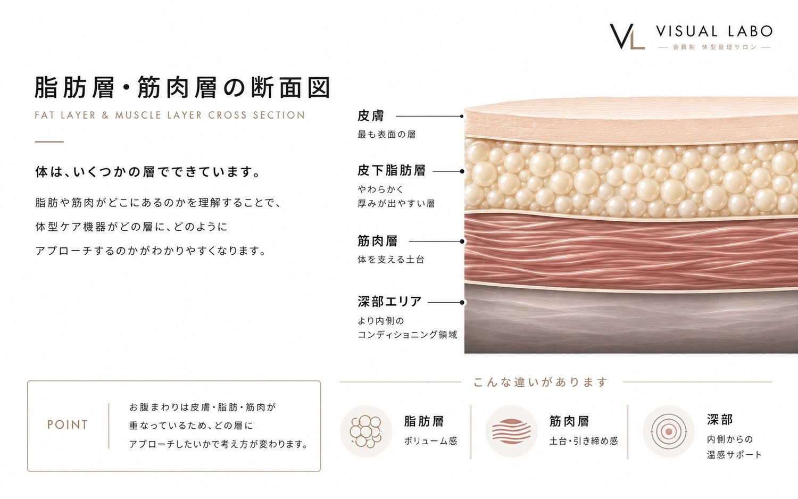
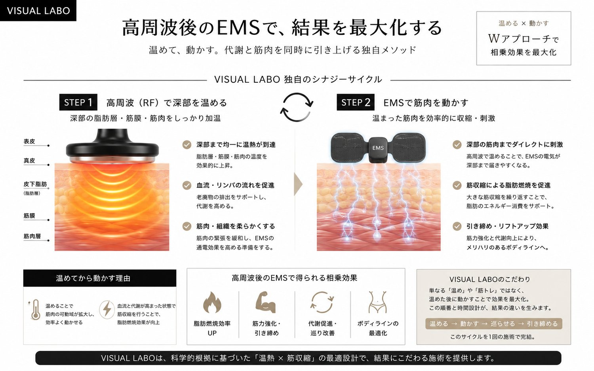
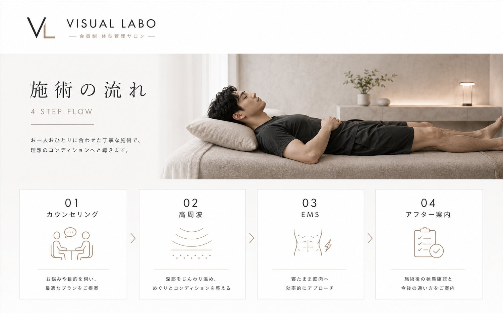
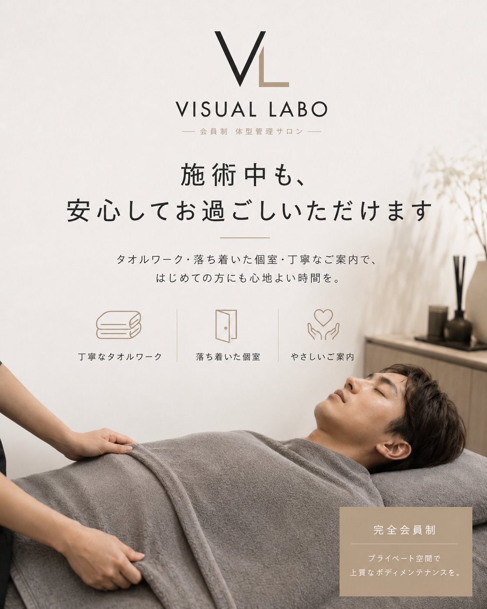

温めて、ゆるめて、EMSで仕上げる。
がんばらなくても、お腹まわりが変わっていく。
自分では届かないお腹の奥から、あなたのお腹を整えていく施術です。
使うのは、VISUAL LABOが自社開発したマシンMystiCore®。高周波（RF）で体の奥からじっくり温めて、固くなりがちなお腹まわりをゆるめる。そして仕上げに高出力EMSで、深部の筋肉まで効率よく動かす。「温めて・ゆるめて・動かす」をひとつの流れで行うのが、VISUAL LABOの体型管理です。お腹まわりの機械施術には、スタッフによる手技でのマッサージ・トリートメントも組み合わせ、ほぐしながら整えます。下腹部にEMSを当てて腹筋（インナーマッスル）を動かし、姿勢を支える筋肉にアプローチするので、反り腰が気になる方や、デスクワークで腰まわりの負担が気になる方の姿勢ケア・コンディショニングにも向いています。ジムでもエステでもない、続けやすい新しい習慣を。

お腹まわりは、高周波とEMSの相性がもっとも良いパーツ。3つの理由があります。
高周波は、電気抵抗の高い脂肪層でもっとも熱を生みます。脂肪が集まりやすいお腹まわりは、内側からじんわり温まりやすいパーツ。冷えてかたくなりがちな部分を、芯から温めて整えます。
お腹の奥には、皮下脂肪のさらに内側に内臓脂肪のある深い層が広がります。もっとも低い300kHzは、その深部までしっかり到達。表面だけでは届きにくい奥の層までアプローチします。
お腹まわりには腹筋群という大きな筋肉があります。自分ではなかなか動かしにくい深い筋肉に、高出力EMSがダイレクトにはたらきかけ、効率よく収縮させます。

お腹まわりは、自分ではいちばん変えにくいパーツ。冷えて固くなりがちなお腹は、運動やマッサージだけではなかなかゆるみません。だからこそ、機械で内側から温めて「ゆるめてから動かす」ことが、効率への近道になります。
高周波で内側からじっくり温めると、冷えて固くなりがちなお腹まわりがゆるみ、やわらかな状態へ。自分ではほぐしにくい深い部分まで届きます。
温まることでめぐりが促され、ためこんだものを流しやすい状態へ整えます。重く感じがちなお腹まわりを、すっきりと。
ゆるんで温まった状態だからこそ、仕上げのEMSが深部の筋肉まで効率よく届きます。固いままでは動かしにくい筋肉に、しっかりアプローチ。
施術は、シンプルな2ステップ。RETの深部加温でしっかり温めてから、仕上げに高出力EMSで筋肉を動かします。
300kHzの高周波（深部加温）で、お腹まわりの深い層まで芯からじっくり温めます。冷えてかたくなった深部をしっかり温めることが、効率的な仕上げの土台になります。
深部が温まり、電気が伝わりやすくなった状態で高出力EMSへ。Drain・Fit・Slimのモードを使い分け、深部の筋肉まで効率よく収縮させて仕上げます。



高周波・EMSは安全性の高い技術ですが、体の状態によってはご利用いただけない場合があります。安全のため、初回のカウンセリングで体調・既往歴を確認させていただきます。
・妊娠中・妊娠の可能性がある方、授乳中の方 ・心臓ペースメーカーなど、体内電子機器を使用中の方 ・心疾患のある方／悪性腫瘍の治療中の方 ・てんかんの既往がある方 ・重度の血栓症・静脈瘤のある方 ・発熱中・感染症にかかっている方／飲酒後の方
・体内に金属（プレート・ボルト・避妊リング等）が入っている方 ・糖尿病などで皮膚の感覚に不安がある方 ・皮膚疾患がある方、施術部位に傷・炎症・強い日焼けがある方 ・高血圧・低血圧などで治療中の方 ・手術を受けて間もない方 ・その他、持病をお持ちの方・通院中の方
※ 当てはまる場合でも、体の状態により施術部位の調整などでご案内できることがあります。かかりつけ医にご相談のうえ、お気軽にお問い合わせください。